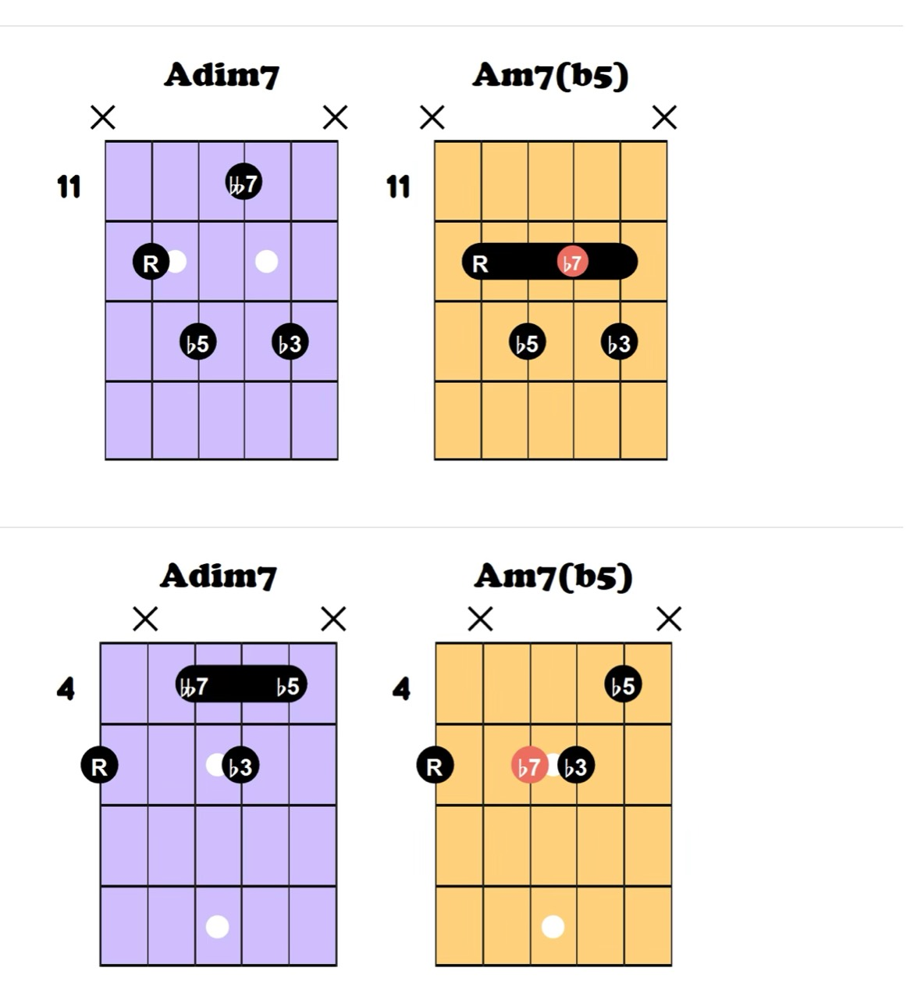
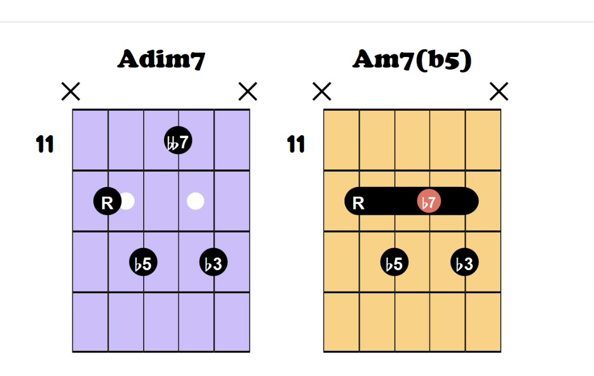

A6(no3) · 為什麼聽起來空靈？
我的聽感：這個 A6，沒有第三音，很空靈、很好聽。
這裡指第一組的 × · × · 7 · 9 · 7 · ×，由低到高是 A–E–F♯：根音、五音與六音。它沒有使用空弦；「空靈」描述的是聽感。
省略三音，留下想像空間。沒有大三音 C♯，也沒有小三音 C，大小調的色彩比較不明確。A 與 E 的純五度提供穩定骨架，聽起來既有支撐，又不會太飽滿。
六音帶來柔和的張力。F♯ 在 A 的上方形成大六度，與 E 又相隔大二度。這個 E–F♯ 的鄰近關係，讓單純的五度多了一點懸浮、未說完的感覺；在這個音域與吉他音色下，可能顯得清透、細膩。
前後和弦讓它更自然。從 D/A 的 A–D–F♯ 轉過來，A 與 F♯ 留住，只有 D 上行到 E；再到 G6(no3) 的 G–D–E，原本第三弦的 E 可由第二弦接續，另外兩個聲部則下行。既有熟悉的共同音，也有流動，因此不會只有靜止的空曠感。
好聽也與你的觸弦、延音、節奏與個人喜好有關。可以先彈 A–E，再加入 F♯，比較六音如何改變色彩；第二組修正後的 × · 12 · 14 · 11 · × · × 同樣是 A–E–F♯，也保留這種色彩。
JAZZ GUITAR / 和聲筆記
半減七、Hendrix Chord 與 Autumn Leaves
以《Autumn Leaves》（秋葉）為例，串起 G 小調七和弦、半減七 m7♭5、屬七升九 7♯9 與爵士常見的 ii–V–I。
一、G 小調的七個常用七和弦
G 自然小調：G – A – B♭ – C – D – E♭ – F。
D7 的 D–F♯–A–C 使用和聲小調的 F♯，使它更有力量解決到 Gm。自然小調本來的第五級是 Dm7；上表是實用的混合和聲，不是單一音階的順階七和弦表。
二、半減七 · m7♭5 / ø7
1 – ♭3 – ♭5 – ♭7：根音、小三度、減五度、小七度。Am7♭5 的組成音是 A–C–E♭–G。
大調常見於第七級：C 大調的 Bm7♭5（viiø7）；小調常見於第二級：G 小調的 Am7♭5（iiø7）。因此教材的大調第七級半減七，和這首歌的小調第二級半減七並不矛盾。
與減七的差別：Adim7 = A–C–E♭–G♭（1–♭3–♭5–𝄫7）；Am7♭5 = A–C–E♭–G（1–♭3–♭5–♭7）。把減七的七音升高半音，就成為半減七。
查看你提供的原始指板圖 · 減七與半減七比較
右側橘色 Am7(b5) 才是半減七；左側紫色 Adim7 是減七。原圖保留，未改標示。


三、屬七升九 · 7♯9 / Hendrix Chord
結構是 1 – 3 – 5 – ♭7 – ♯9。D7(♯9) = D–F♯–A–C–E♯（E♯ 與 F 等音）。F♯ 與 F 的並存帶來強烈藍調張力；實際吉他按法也常省略五音 A。
搖滾與藍調：例如〈Purple Haze〉中的 E7(♯9)，可作為主和弦長時間停留。爵士：在 G 小調中把 D7(♯9) 當作變化屬和弦，增加張力後解決到 Gm。
Am7♭5 → D7(♯9) → Gm
iiø7 → V7(♯9) → i
四、《Autumn Leaves》的兩個和聲中心
Cm7 → F7 → B♭maj7 → E♭maj7 → Am7♭5 → D7(♯9) → Gm7
iv7 → VII7 → IIImaj7 → VImaj7 → iiø7 → V7(♯9) → i7
B♭ 大調 ii–V–I：Cm7 → F7 → B♭maj7，暫時以關係大調為中心。
G 小調 iiø–V–i：Am7♭5 → D7(♯9) → Gm，回到小調主和弦。Gm 或 Gm7 的選擇依編曲而定。
你提供的 16 小節安排
以下保留你提供的分組；本次未附《Autumn Leaves》原譜，因此未核對各小節拍點、和弦時值，也不把它當作所有版本通用的曲式。
末段 Gm7 → G♭7 → Fm7 → E7 → E♭maj7 → D7 的根音半音下行，帶出調外和聲色彩，最後回到 Gm。
五、先熟練這三個觀念
- 半減七：大調第七級、小調第二級；準備張力。
- 7♯9：Hendrix Chord 類型；在這裡作為 V7 增加張力。
- Autumn Leaves：B♭ 大調與 G 小調的兩組 ii–V–I 相互連接。
Am7♭5 → D7(♯9) → Gm
準備張力 → 增加張力 → 解決。練習時聽 Am7♭5 的 C 如何留在 D7，以及 D7 的 F♯ 如何上行到 G。
文字與原始圖片來源：你提供的學習筆記及指板圖。下方品位以標準調弦核對，重新繪製音名圖；未加入原圖未標示的手指編號。